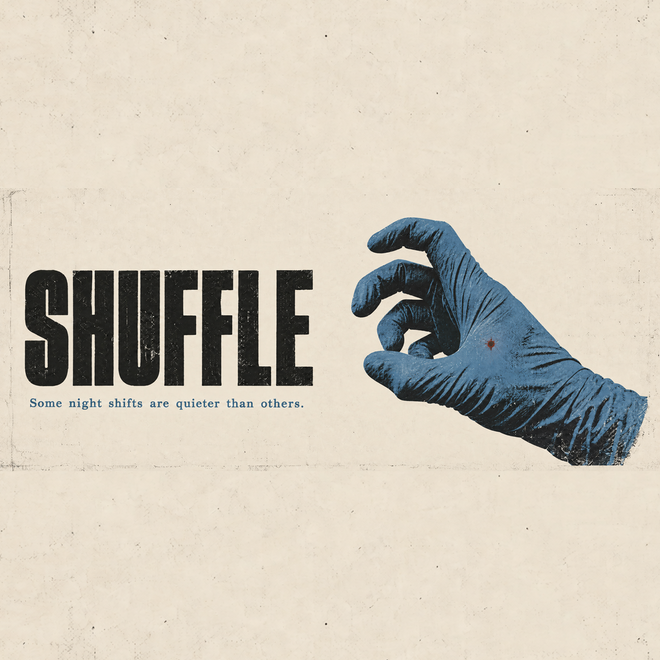

Six ways to get a 1:1 icon out of your 2.33:1 artwork. These are real crops and
recompositions of your actual file — not redrawn. Where elements are moved, they are composited
onto paper taken from the artwork itself using a darken blend, so there are no visible
rectangular seams and the grain stays continuous.

Source: Shuffle Thumbnail.png · 2688 × 1152 · 2.33:1
A square icon has to lose 57% of the frame, so something must go. The decision is
really: keep the hand, keep the type, or rebuild the relationship between them.
The red puncture sits at (1997, 632) in the original — it survives every crop below that
includes the glove, which matters, because it is the only narrative detail in the image.
Circle mask = how it looks as a profile avatar. The 32px column is the one that decides it.